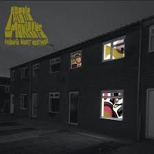

Fluorescent Adolescent - Artic Monkeys

You used to get it in your fishnets
Now you only get it in your night dress
Discarded all the naughty nights for niceness
Landed in a very common crisis
Everything's in order in a black hole
Nothing seems as pretty as the past, though
That Bloody Mary's lacking a Tabasco
Remember when you used to be a rascal?
Oh, that boy's a slag
The best you ever had
The best you ever had
Is just a memory and those dreams
Weren't as daft as they seemed
Not as daft as they seemed
My love, when you dreamed them up
Flicking through a little book of sex tips
Remember when the boys were all electric?
Now when she tells she's gonna get it
I'm guessing that she'd rather just forget it
Clinging to not getting sentimental
Said she wasn't going but she went still
Likes her gentlemen to not be gentle
Was it a megadobber or a betting pencil?
Oh, that boy's a slag
The best you ever had
The best you ever had
Is just a memory and those dreams
But as daft as they seem
As daft as they seem
My love, when you dreamed them up
Oh, flo
Where did you go?
Where did you go?
Where did you go? Oh
Falling about
You took a left off Last Laugh Lane
Just sounding it out
But you're not coming back again
You’re falling about
You took a left off Last Laugh Lane
You were just sounding it out
But you're not coming back again
You used to get it in your fishnets
Now you only get it in your night dress (falling about)
Discarded all the naughty nights for niceness (you took a left off Last Laugh Lane)
Landed in a very common crisis
Everything's in order in a black hole
Is anything as pretty as the past though (you were just sounding it out)
That Bloody Mary's lacking in Tabasco (you're not coming back again)
Remember when you used to be a rascal? Oh
Fonte da Letra
Voltar